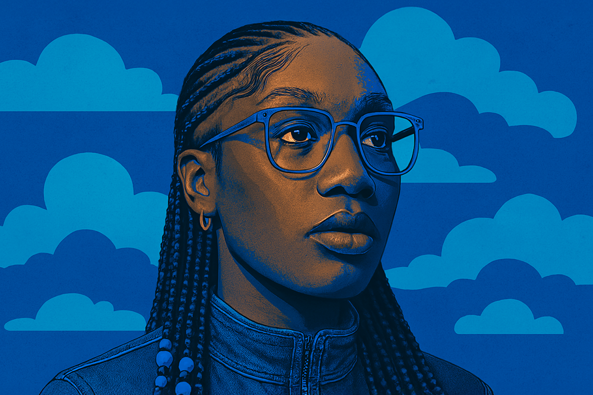
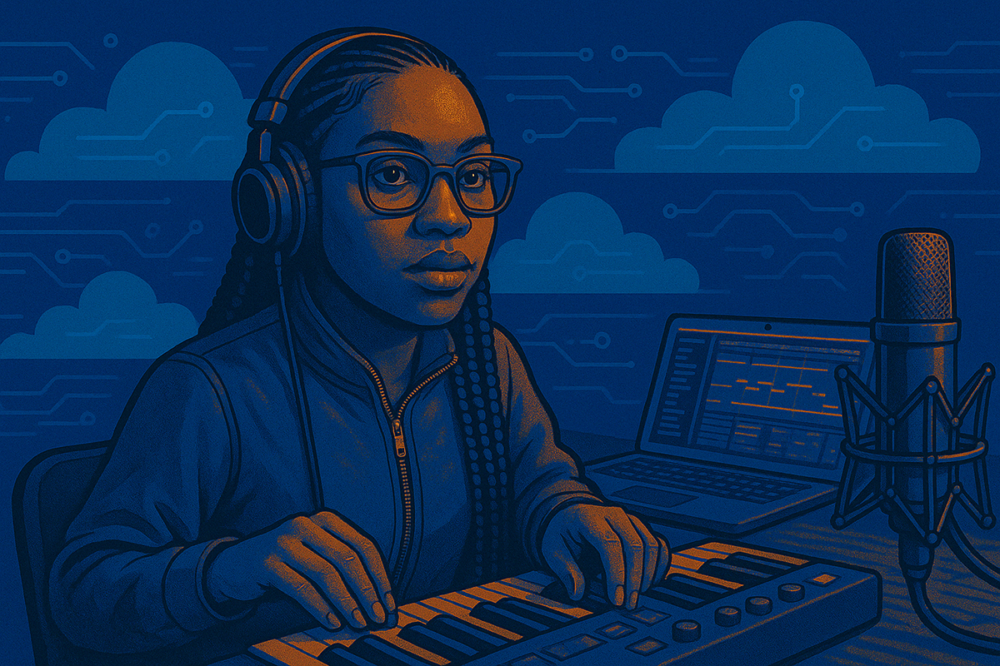
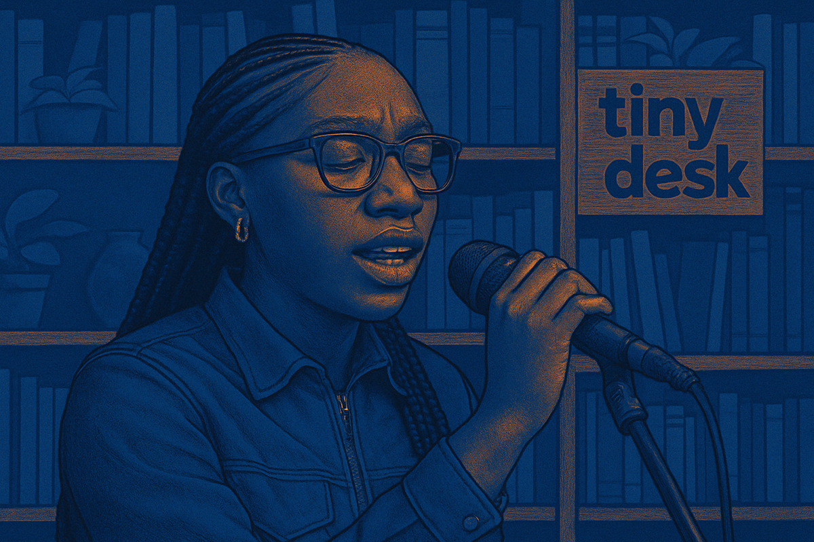

DOECHII, la imparable rapera del momento
¿Qué hay tras el ascenso implacable de la joven artista?
¿Qué hay tras el ascenso implacable de la joven artista?

Si en redes sociales no has escuchado esta canción, o no te suena esta, definitivamente, tienes que haberte topado con este single en algún trend de turno
¿Qué tienen en común estos tracks? Que todos han sido creados por Doechii, la joven rapera del momento y que, recién este año, consiguió llevarse el Grammy en la categoría de mejor álbum de hip-hop del año con el trabajo “Alligator Bites Never Heal” (2024). Este hito en su carrera la transformó en la tercera representante femenina del género en llevarse este tremendo reconocimiento. Y ojo, que lo hizo con un mixtape, ni siquiera con un full álbum.
Pero la historia de Doechii es aún más inspiradora de lo que muchos imaginan, sobre todo considerando su implacable amor por la música y con cómo logró llegar a la cima a punta de constancia, perseverancia y, por sobre todo, talento.
Adentrémonos un poco en los pasos que tuvo que dar la rapera antes de convertirse en uno de los símbolos más reconocidos en la industria actual.
Después de haber sido despedida de su trabajo hace cinco años, y de haber documentado este momento a través de su canal de Youtube, Doechii decidió “pisar el palito” y lanzarse en la búsqueda para concretar de la manera correcta su sueño de hacer música. En ese mismo vídeo explica que comenzará una búsqueda implacable de estudios que tuvieran pasantías disponibles o simplemente de estudios discográficos que puedan estar interesados porque “no tengo nada que perder”.
Hoy, la rapera estadounidense de 26 años cuenta con varios singles aplaudidos por la audiencia y por los críticos en lo que parece el apogeo de una carrera que comenzó hace poco más de 10 años, cuando la rapera y cantante subió su primera canción en la plataforma Soundcloud bajo el user “Iamdoechii”.
No fue hasta el 2020 que la artista comenzó a llamar la atención de la prensa especializada de la mano de su primer EP “Oh the Places You'll Go” y la canción “Yucky Blucky Fruitcake” single que, al día de hoy, suma más de 6 millones de reproducciones en YouTube.

Pero eso solo fue el inicio de una trayectoria maratónica que llegó a uno de sus puntos clave con el single “What It Is” (2023) el que fue, me atrevería a decir, su primer hit viral. Doechii, inspirada con toda la ola R&B y pop noventera tan características de agrupaciones como TLC y Destiny’s Child, logró magistralmente que esta canción tocara la nota de nostalgia que tanto ha marcado estos últimos años en la música.
De ahí en más, todo lo que tocó Doechii se volvió canon: tanto sus canciones propias como sus colaboraciones se transformaron en un éxito. Y, lo más importante, en un éxito justificado.
Es que la originalidad de la artista, su capacidad de cantar y rapear, su lírica y su ojo clínico al escoger los artistas con quien colaborar, han logrado que, paso a paso, llegara a marcar un nuevo precedente en la nueva ola de raperas mainstream femeninas. Aquellas capaces de adaptarse, pero que no meten bajo la alfombra, lo que las convirtió en lo que son, sin olvidar sus raíces y su impronta.
Sobre su innegable despegue el año pasado, podemos puntualizar diferentes tópicos: el lanzamiento de su álbum ganador del Grammy y su show en el mismo certamen, su viral presentación en el popular canal de YouTube Tiny Desk, sus colaboraciones con grandes artistas y su aparición como una nueva “it girl” en diferentes desfiles de moda.

“DENIAL IS A RIVER” pudo ser el primer indicio de que nos encontrábamos con algo distintivo, algo fuera de lo común, algo con personalidad. Con el característico estilo de Doechii, pudimos enfrentarnos a un material que escapaba del hip-hop actual para toparnos con algo más teatral, más interpretativo y casi conversacional. En pocas palabras, con una vibra que, nuevamente, recordaba a los inicios del género, pero con un toque personal mucho más modernizado.
Con ese single, poco faltó para llegar a “NISSAN ALTIMA” o a “CATFISH”, otras canciones de su álbum “Alligator Bites Never Heal”, que también fueron llamativas por su revival a los sonidos más clásicos del hip-hop.
Con esta llamada de atención, y con la colaboración que tuvo con Tyler The Creator en el último y anticipado álbum del rapero, Doechii se instaló en el popular show de YouTube Tiny Desk, donde impresionó con un desplante y una banda increíbles. Acá también interpretó algunas de las canciones que, finalmente, terminaron nominándola al Grammy. Ese “Tiny” actualmente supera las 14 millones de visitas a solo 4 meses de su publicación.
Hace unos pocos meses, Doechii vuelve a ser la dueña de un audio viral después que su estribillo en su canción colaborativa junto a Jennie de BLACKPINK explotara en popularidad. Con esto, solo crece el entusiasmo por saber cuáles serán los próximos pasos de una artista que, ni siquiera una vez, ha dado un paso en falso en esta estrepitosa y muchas veces superficial industria musical.
 Cultura
CulturaSé que suena raro hablar de calor extremo mientras en Chile todos están buscando la parka más gruesa del clóset.
 Cultura
CulturaEl hecho de que estemos entrando al mes de julio no se puede creer. Pero lo que tampoco se puede creer es la cantidad de artistas que han…
 Cultura
CulturaCuando hablamos de trabajos clásicos de la música chilena, siempre se nombran los discos de Violeta Parra, Víctor Jara, Los Jaivas o…